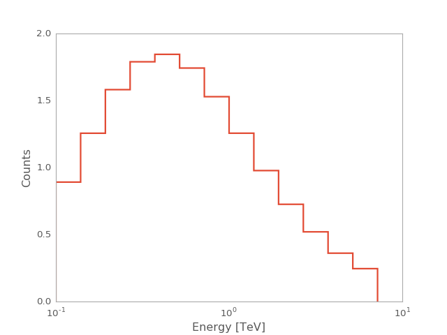

calculate_predicted_counts¶
-
gammapy.spectrum.calculate_predicted_counts(model, aeff, edisp, livetime, e_reco=None)[source]¶ Get npred
The true energy binning is inferred from the provided
EffectiveAreaTable. The reco energy binning can be inferred from theEnergyDispersionor be given as a parameter.Parameters: model :
SpectralModelSpectral model
livetime :
QuantityObservation duration
aeff :
EffectiveAreaTableEffectiveArea
edisp :
EnergyDispersionEnergyDispersion
e_reco :
Quantity, optionalDesired energy axis of the prediced counts vector By default, the reco energy axis of the energy dispersion matrix is used.
Returns: counts :
CountsSpectrumPredicted counts
Examples
Calculate prediced counts in a desired reconstruced energy binning
from gammapy.irf import EnergyDispersion, EffectiveAreaTable from gammapy.spectrum import models, calculate_predicted_counts import numpy as np import astropy.units as u import matplotlib.pyplot as plt e_true = np.logspace(-2,2.5,109) * u.TeV e_reco = np.logspace(-2,2,73) * u.TeV aeff = EffectiveAreaTable.from_parametrization(energy=e_true) edisp = EnergyDispersion.from_gauss(e_true=e_true, e_reco=e_reco, sigma=0.3) model = models.PowerLaw(index=2.3, amplitude=2.5 * 1e-12 * u.Unit('cm-2 s-1 TeV-1'), reference=1*u.TeV) livetime = 1 * u.h e_reco_desired = np.logspace(-1, 1, 15) * u.TeV npred = calculate_predicted_counts(model=model, aeff=aeff, edisp=edisp, livetime=livetime, e_reco=e_reco_desired) npred.plot_hist() plt.show()
(Source code, png, hires.png, pdf)

{kind=link}
{kind=link}